Evaluación
Revisamos el soporte y la necesidad.
ACABADO CONTINUO
La evolución del acabado continuo. Un kit completo para renovar pisos, muros y mobiliario sin demoler.

SOLUCIÓN KAEMENTO
Microcemento KAEMENTO integra tres capas cementicias, aditivo polimérico impermeabilizante y sellador final. Está desarrollado para lograr continuidad visual, alto desempeño y acompañamiento técnico en cada etapa.
PASO A PASO
Revisamos el soporte y la necesidad.
Acondicionamos la superficie.
Ejecutamos el sistema especificado.
Finalizamos y verificamos el desempeño.
SUPERFICIES CONTINUAS
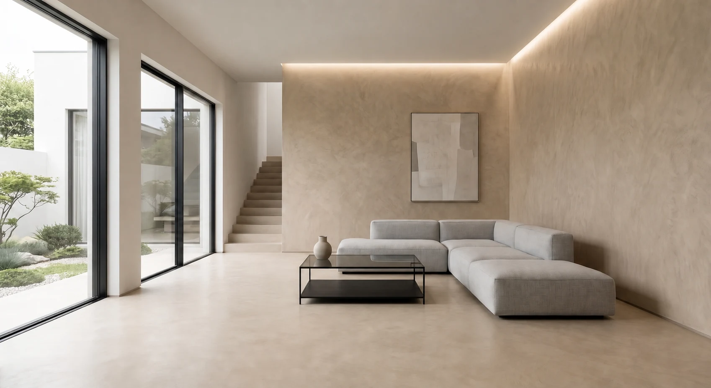
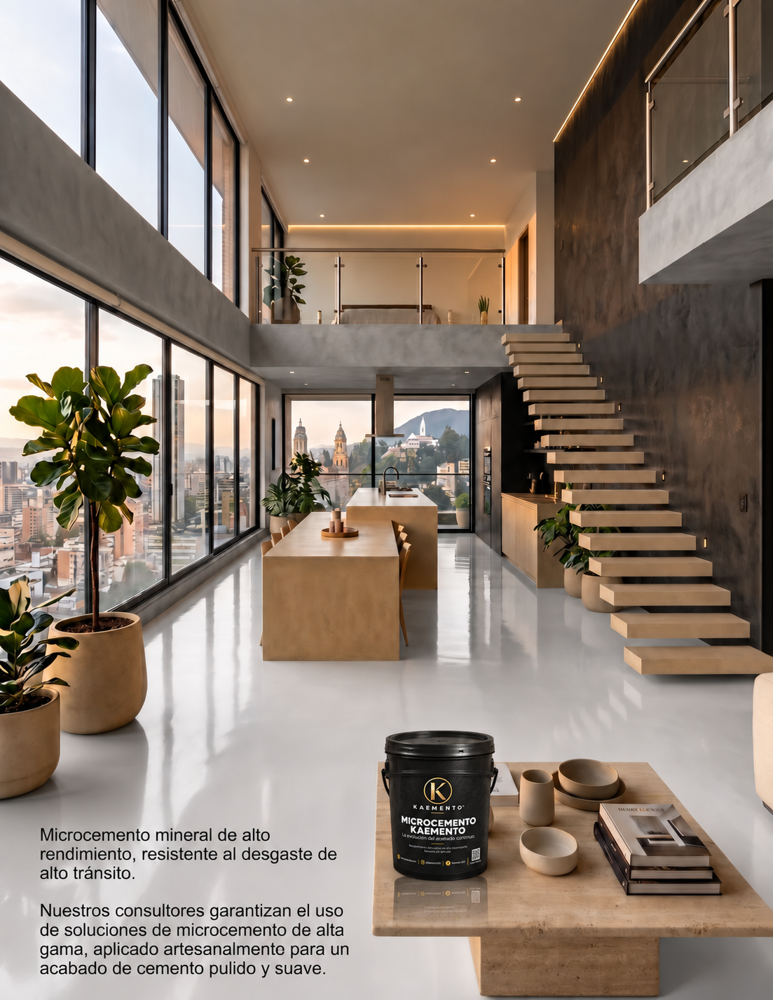
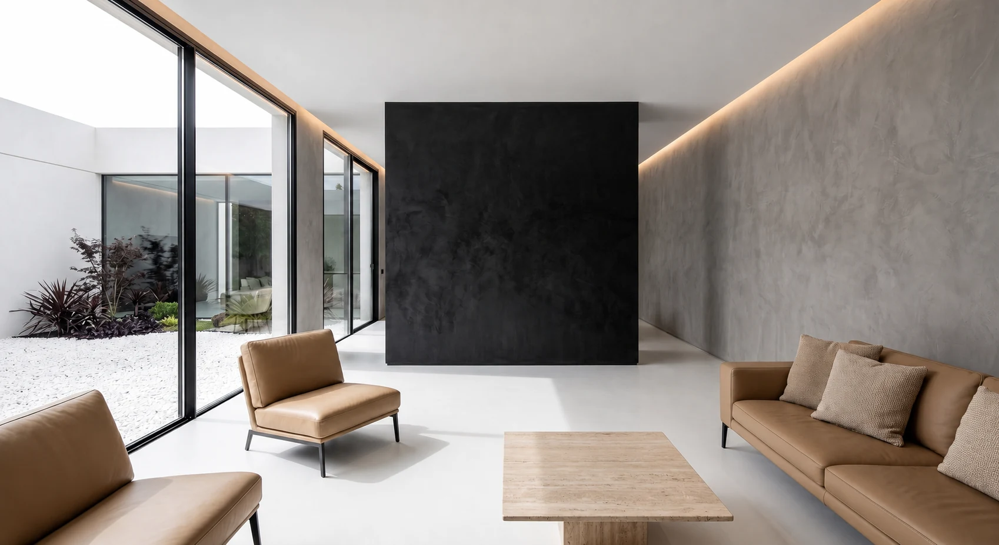
MICROCEMENTO EN LOS ESPACIOS
Pisos, muros, baños y terrazas: una selección de ambientes y aplicación de nuestro catálogo de Microcemento KAEMENTO.
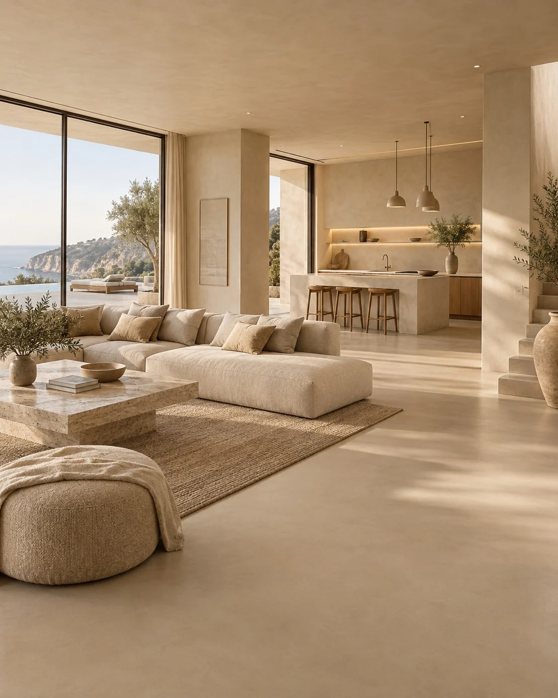
Sala en tono Arena, con superficies continuas y luz natural.
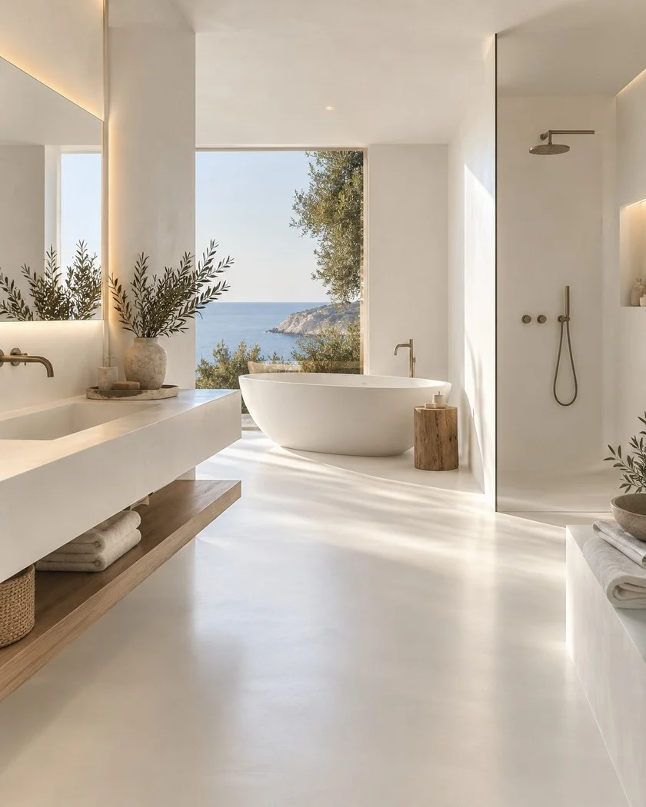
Baño en Extra Blanco, con continuidad entre piso y muros.
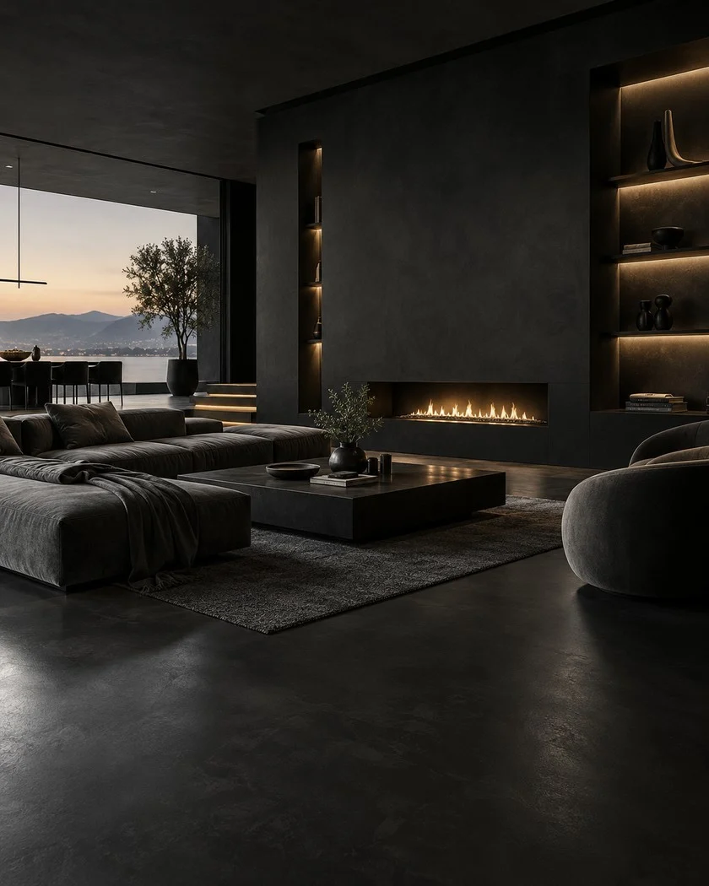
Sala en Negro Profundo, con chimenea y acabados de alto contraste.
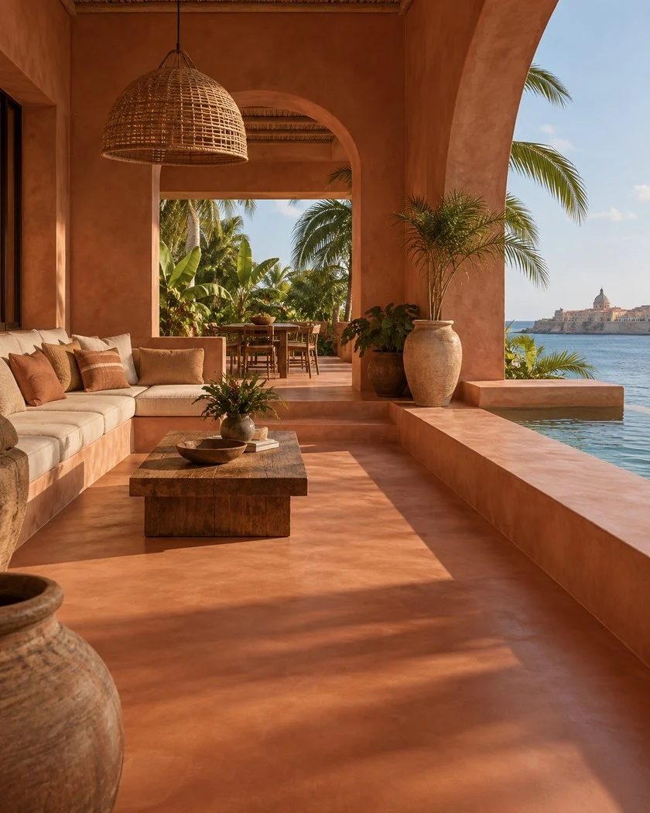
Terraza en Terracota, con superficies de expresión mineral.
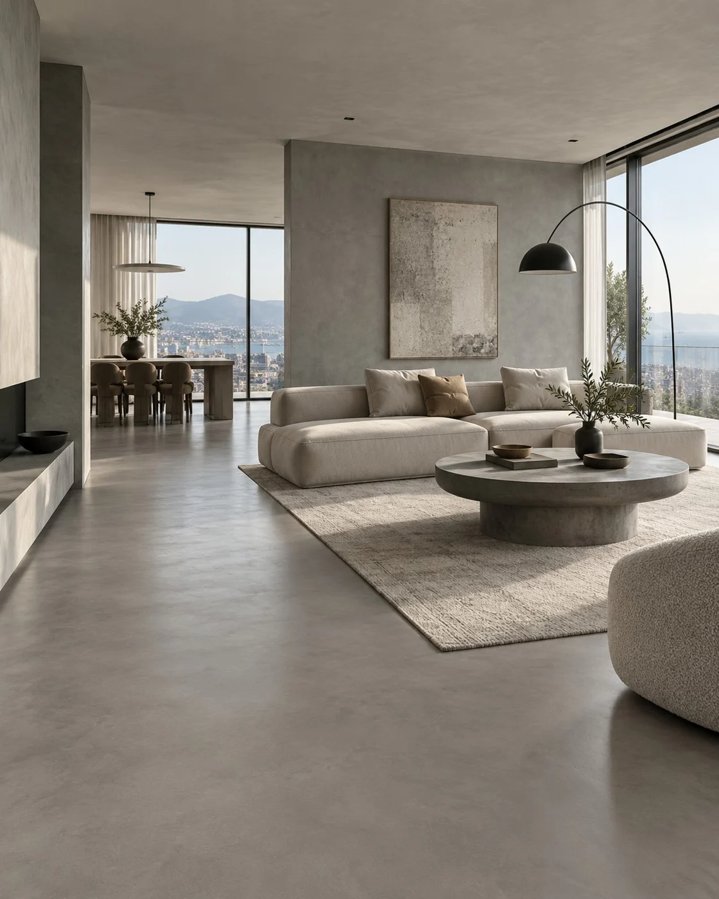
Interior en Gris Cemento, con piso continuo de tono neutro.
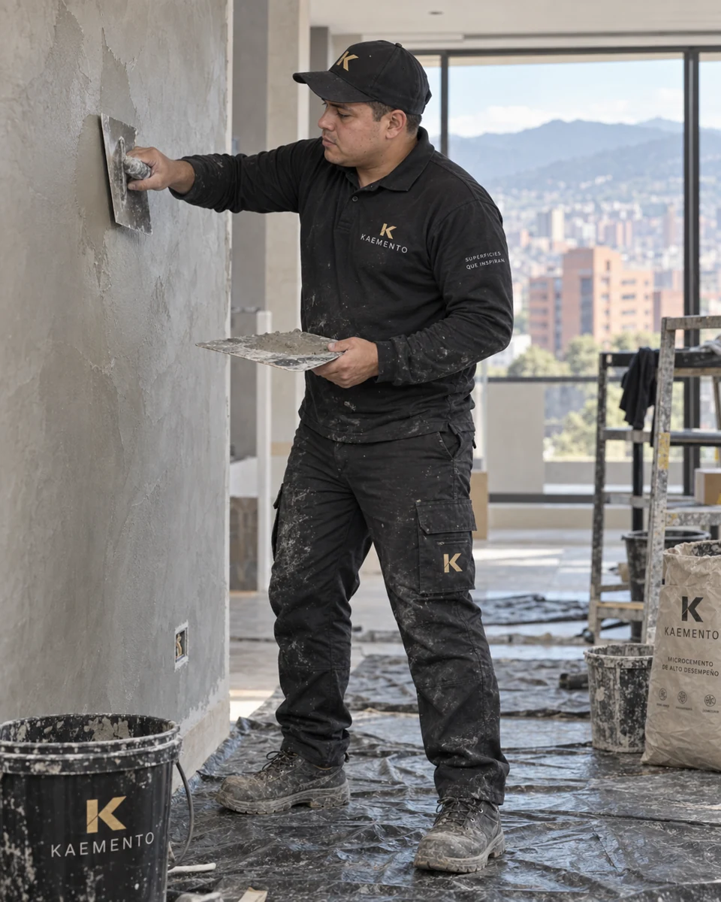
Aplicación con llana sobre una superficie preparada.
Acabados del sistema
La carta de microcemento reúne tonos minerales, tierras, grises y acentos profundos para acompañar diferentes lenguajes arquitectónicos.
Las muestras digitales son orientativas. El color, la textura y la variación final deben validarse sobre una muestra física aprobada para cada sistema, lote y proyecto.
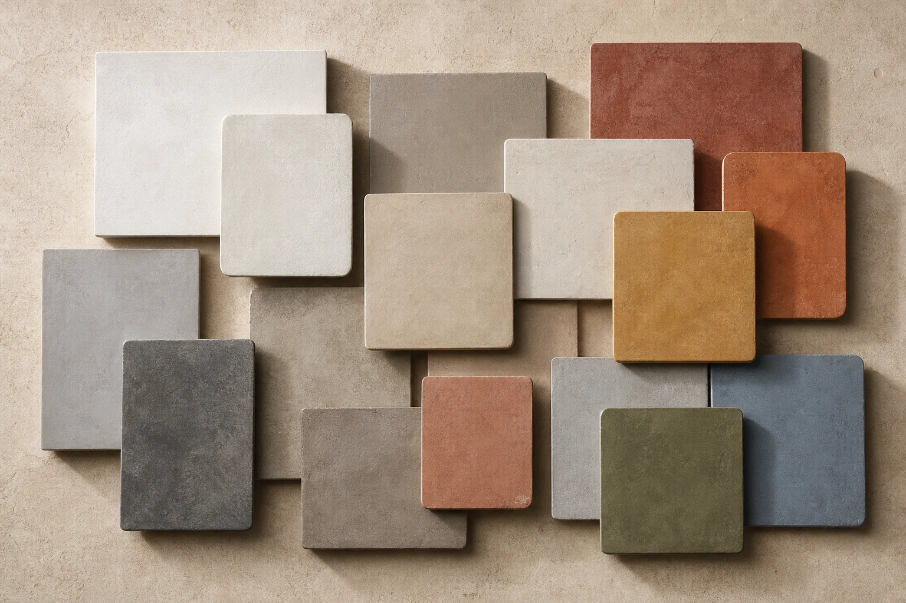
INFORMACIÓN CLAVE
Rendimiento aproximado por kit sobre soporte correctamente preparado.
Espesor total aproximado del sistema completo.
Base, segunda capa, finish, aditivo y sellador final.
No recomendamos seleccionar una capa o producto de forma aislada sin revisar el soporte y el uso final. La preparación, dosificación, aplicación y curado forman parte del desempeño.
CONTENIDO DEL KIT
Base, arena de cuarzo, segunda capa, acabado final, aditivo polimérico y sellador KAEMENTO, organizados para un rendimiento aproximado de 10–12 m².
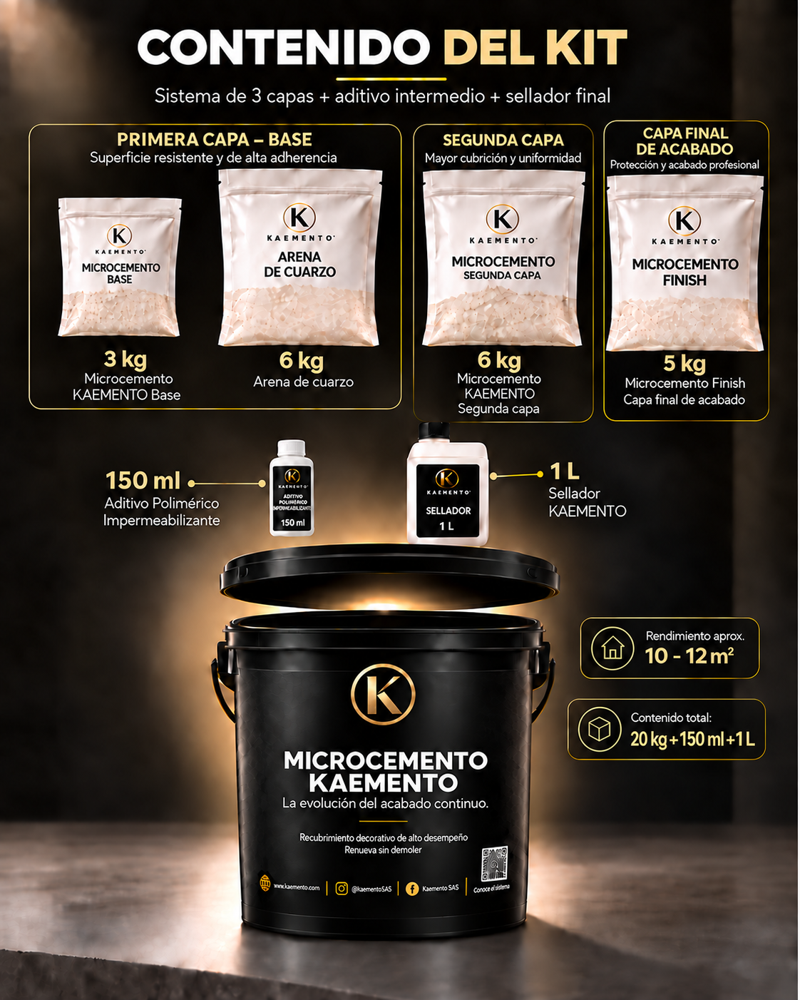
PREGUNTAS FRECUENTES
La compatibilidad depende del soporte, su estabilidad, humedad, absorción y uso final. Recomendamos una evaluación previa y seguir la ficha o manual correspondiente.
No. El desempeño de cualquier sistema depende de una base limpia, firme, estable y correctamente preparada.
Sí. KAEMENTO ofrece orientación para seleccionar el sistema, entender la aplicación y reducir errores en obra.
KAEMENTO EN MOVIMIENTO
Secuencias ilustrativas del proceso. La intervención se define según el diagnóstico y las condiciones de cada superficie.
Una propuesta visual para transformar un baño con superficies de expresión mineral.
Edición visual sin audio · Imágenes generadas con IA, no registro de una obra ejecutada.
ASESORÍA KAEMENTO